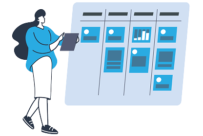

Welcome
Easily create a ticket by sending an email — no extra steps needed.
On this platform, you can submit your feature requests via email. Our AI system will automatically generate a ticket with a deadline and priority level.
A total of 10 requests can be created per day. After this limit, emails can still be sent, but they will be manually reviewed by our team instead of generating AI tickets.
The daily 10-request limit has been reached!
Need more? No worries — you can still send emails, but our team will review them manually instead of using AI to create tickets.
